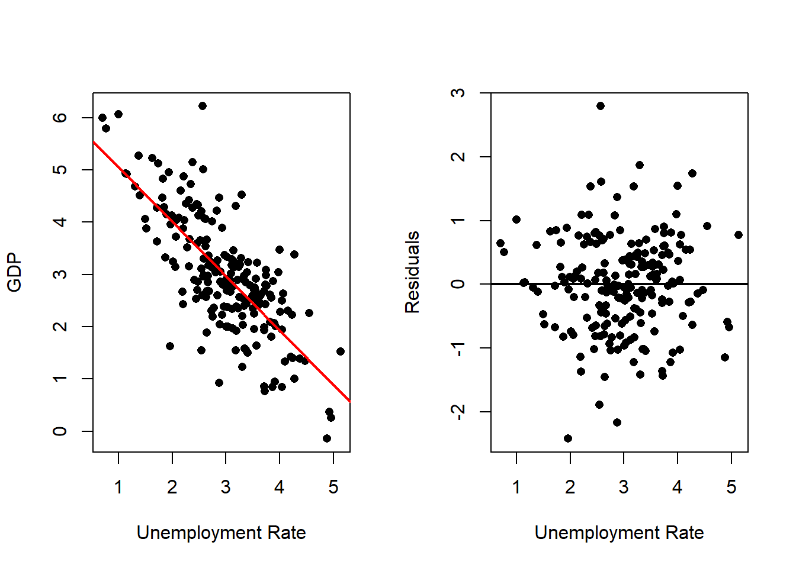
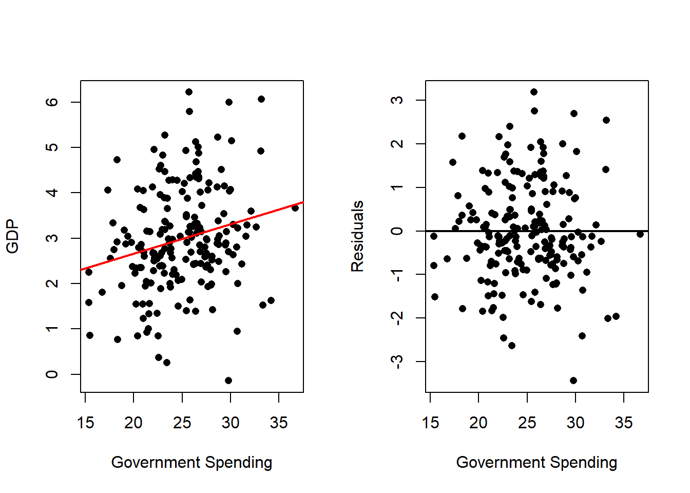

6 Multiple Linear Regression
6.1 Introduction
Multiple regression is a statistical technique used to model the relationship between a dependent variable and two or more independent variables. It extends simple linear regression by allowing for a more complex analysis of how various factors impact an outcome. The general form of the multiple regression equation is:
\[ y_i = \beta_0 + \beta_1 x_{1,i} + \beta_2 x_{2,i} + \ldots + \beta_p x_{p,i} + e_i \quad i=\{1,\ldots,n\} \]
Where: - \(y\) is the dependent variable. - \(\beta_0\) is the intercept. - \(\beta_1, \beta_2, \ldots, \beta_p\) are the coefficients of the independent variables \(X_1, X_2, \ldots, X_p\). - $e represents the error term.
This technique is widely used across various fields, including economics, social sciences, and healthcare, to control for multiple factors and enhance prediction accuracy. However, it requires careful attention to assumptions. Beyond linearity, now we have to consider issues like independence, multicollinearity, and variable selection which can affect the results.
We already have seen an example of Multiple linear regression when we worked with Polynomial regression. However, multiple linear regression is more general.
6.2 Example
Consider, for example, the task of explaining a country’s GDP using other economic variables such as inflation, unemployment, reference interest rate, government spending (as a percentage of GDP), and exports (as a percentage of GDP).
In this case, visualization is not as straightforward, and visually inspecting these relationships is much less practical. Nevertheless, with this number of variables, we can visually explore the relationships between them as follows:
# Reads Data
dat <- read.csv(file = "Gdp Data.csv")
# Plot the scatterplots for each pair of variables
pairs(dat)Here we can see, that some independent variables are more related to GDP and
some independent variables are more related between themselves. This is valuable information that will help us
to develop the right linear model with this variables.
We can also observe the correlation between these variables as follows:
## gdp inf une int gov exp
## gdp 1.0000000 0.875131082 -0.74874795 0.6964256 0.22172279 0.173602651
## inf 0.8751311 1.000000000 -0.78173033 0.8292061 0.31103644 0.005685918
## une -0.7487479 -0.781730327 1.00000000 -0.3642453 -0.16674407 0.010553855
## int 0.6964256 0.829206121 -0.36424525 1.0000000 0.21389456 0.015699798
## gov 0.2217228 0.311036436 -0.16674407 0.2138946 1.00000000 0.018475446
## exp 0.1736027 0.005685918 0.01055386 0.0156998 0.01847545 1.000000000We can also fit simple linear regression with each one of the independent variables.
Inflation Rate
# Fits with Inflation
outRegInf <- lm(gdp ~ inf, data = dat)
varVal <- dat$inf
out <- outRegInf
varNam <- "Inflation Rate"
# Plots Regression Line and Scatterplot and residuals plot
par(mfrow = c(1, 2))
plot(x = varVal,
y = dat$gd,
xlab = varNam,
ylab = "GDP")
abline(a = out$coefficients[1],
b = out$coefficients[2],
col = 'red',
lwd = 2)
plot(x = varVal,
y = out$residuals,
xlab = varNam,
ylab = "Residuals")
abline(h = 0,
lwd = 2)Unemployment Rate
# Fits with Inflation
outRegUne <- lm(gdp ~ une, data = dat)
varVal <- dat$une
out <- outRegUne
varNam <- "Unemplyment Rate"
# Plots Regression Line and Scatterplot and residuals plot
par(mfrow = c(1, 2))
plot(x = varVal,
y = dat$gd,
xlab = varNam,
ylab = "GDP")
abline(a = out$coefficients[1],
b = out$coefficients[2],
col = 'red',
lwd = 2)
plot(x = varVal,
y = out$residuals,
xlab = varNam,
ylab = "Residuals")
abline(h = 0,
lwd = 2) Interest Rate
# Fits with Inflation
outRegInt <- lm(gdp ~ int, data = dat)
varVal <- dat$int
out <- outRegInt
varNam <- "Interest Rate"
# Plots Regression Line and Scatterplot and residuals plot
par(mfrow = c(1, 2))
plot(x = varVal,
y = dat$gd,
xlab = varNam,
ylab = "GDP")
abline(a = out$coefficients[1],
b = out$coefficients[2],
col = 'red',
lwd = 2)
plot(x = varVal,
y = out$residuals,
xlab = varNam,
ylab = "Residuals")
abline(h = 0,
lwd = 2)Goverment Spending
# Fits with Inflation
outRegGov <- lm(gdp ~ gov, data = dat)
varVal <- dat$gov
out <- outRegGov
varNam <- "Goverment Spending"
# Plots Regression Line and Scatterplot and residuals plot
par(mfrow = c(1, 2))
plot(x = varVal,
y = dat$gd,
xlab = varNam,
ylab = "GDP")
abline(a = out$coefficients[1],
b = out$coefficients[2],
col = 'red',
lwd = 2)
plot(x = varVal,
y = out$residuals,
xlab = varNam,
ylab = "Residuals")
abline(h = 0,
lwd = 2)
Exports
# Fits with Inflation
outRegExp <- lm(gdp ~ exp, data = dat)
varVal <- dat$exp
out <- outRegExp
varNam <- "Exports"
# Plots Regression Line and Scatterplot and residuals plot
par(mfrow = c(1, 2))
plot(x = varVal,
y = dat$gd,
xlab = varNam,
ylab = "GDP")
abline(a = out$coefficients[1],
b = out$coefficients[2],
col = 'red',
lwd = 2)
plot(x = varVal,
y = out$residuals,
xlab = varNam,
ylab = "Residuals")
abline(h = 0,
lwd = 2)All of them seem like good candidates for a linear relationship with the GDP, however when we use them all together, a more careful analysis should be made.
We can see the summary reports for the individual regressions and the regression with all independent variables as follows:
outRegAll <- lm(gdp ~ inf + une + int + gov + exp, data = dat)
# Summary All
print("All Independent Variables")## [1] "All Independent Variables"##
## Call:
## lm(formula = gdp ~ inf + une + int + gov + exp, data = dat)
##
## Residuals:
## Min 1Q Median 3Q Max
## -1.56610 -0.38300 -0.00634 0.36630 1.22542
##
## Coefficients:
## Estimate Std. Error t value Pr(>|t|)
## (Intercept) 1.555301 0.380440 4.088 6.41e-05 ***
## inf 0.312218 0.090012 3.469 0.000647 ***
## une -0.377334 0.129275 -2.919 0.003938 **
## int 0.177827 0.128312 1.386 0.167403
## gov -0.008483 0.010361 -0.819 0.413950
## exp 0.064657 0.011930 5.420 1.80e-07 ***
## ---
## Signif. codes: 0 '***' 0.001 '**' 0.01 '*' 0.05 '.' 0.1 ' ' 1
##
## Residual standard error: 0.5024 on 190 degrees of freedom
## Multiple R-squared: 0.8096, Adjusted R-squared: 0.8046
## F-statistic: 161.6 on 5 and 190 DF, p-value: < 2.2e-16## [1] "Only Inflation Rate"##
## Call:
## lm(formula = gdp ~ inf, data = dat)
##
## Residuals:
## Min 1Q Median 3Q Max
## -1.40960 -0.38896 0.03562 0.37998 1.33364
##
## Coefficients:
## Estimate Std. Error t value Pr(>|t|)
## (Intercept) 1.02551 0.08705 11.78 <2e-16 ***
## inf 0.49489 0.01965 25.19 <2e-16 ***
## ---
## Signif. codes: 0 '***' 0.001 '**' 0.01 '*' 0.05 '.' 0.1 ' ' 1
##
## Residual standard error: 0.5514 on 194 degrees of freedom
## Multiple R-squared: 0.7659, Adjusted R-squared: 0.7646
## F-statistic: 634.5 on 1 and 194 DF, p-value: < 2.2e-16## [1] "Only Unemployment Rate"##
## Call:
## lm(formula = gdp ~ une, data = dat)
##
## Residuals:
## Min 1Q Median 3Q Max
## -2.42276 -0.49693 0.02667 0.49525 2.79562
##
## Coefficients:
## Estimate Std. Error t value Pr(>|t|)
## (Intercept) 6.0868 0.2046 29.74 <2e-16 ***
## une -1.0400 0.0661 -15.73 <2e-16 ***
## ---
## Signif. codes: 0 '***' 0.001 '**' 0.01 '*' 0.05 '.' 0.1 ' ' 1
##
## Residual standard error: 0.7554 on 194 degrees of freedom
## Multiple R-squared: 0.5606, Adjusted R-squared: 0.5584
## F-statistic: 247.5 on 1 and 194 DF, p-value: < 2.2e-16## [1] "Only Interest Rate"##
## Call:
## lm(formula = gdp ~ int, data = dat)
##
## Residuals:
## Min 1Q Median 3Q Max
## -2.27807 -0.50801 -0.00257 0.50336 2.69719
##
## Coefficients:
## Estimate Std. Error t value Pr(>|t|)
## (Intercept) -1.31600 0.32323 -4.071 6.8e-05 ***
## int 0.86483 0.06398 13.517 < 2e-16 ***
## ---
## Signif. codes: 0 '***' 0.001 '**' 0.01 '*' 0.05 '.' 0.1 ' ' 1
##
## Residual standard error: 0.8178 on 194 degrees of freedom
## Multiple R-squared: 0.485, Adjusted R-squared: 0.4824
## F-statistic: 182.7 on 1 and 194 DF, p-value: < 2.2e-16## [1] "Only Government Spending"##
## Call:
## lm(formula = gdp ~ gov, data = dat)
##
## Residuals:
## Min 1Q Median 3Q Max
## -3.4370 -0.6442 -0.1258 0.7429 3.1839
##
## Coefficients:
## Estimate Std. Error t value Pr(>|t|)
## (Intercept) 1.37117 0.51450 2.665 0.00835 **
## gov 0.06464 0.02041 3.167 0.00179 **
## ---
## Signif. codes: 0 '***' 0.001 '**' 0.01 '*' 0.05 '.' 0.1 ' ' 1
##
## Residual standard error: 1.111 on 194 degrees of freedom
## Multiple R-squared: 0.04916, Adjusted R-squared: 0.04426
## F-statistic: 10.03 on 1 and 194 DF, p-value: 0.001789## [1] "Only Exports"##
## Call:
## lm(formula = gdp ~ exp, data = dat)
##
## Residuals:
## Min 1Q Median 3Q Max
## -3.0084 -0.6679 -0.1133 0.6581 3.0810
##
## Coefficients:
## Estimate Std. Error t value Pr(>|t|)
## (Intercept) 2.32709 0.27818 8.365 1.16e-14 ***
## exp 0.06540 0.02664 2.455 0.015 *
## ---
## Signif. codes: 0 '***' 0.001 '**' 0.01 '*' 0.05 '.' 0.1 ' ' 1
##
## Residual standard error: 1.122 on 194 degrees of freedom
## Multiple R-squared: 0.03014, Adjusted R-squared: 0.02514
## F-statistic: 6.028 on 1 and 194 DF, p-value: 0.01496As we can see, the values for the coefficients can change when doing simple linear regression and multiple linear regression. If the changes are very dramatic (like change in the sign of the coefficient) further inspection is necessary for that variable.
6.3 Least Squares Estimation
For least squares estimation, we need to solve the problem:
\[ \min_\boldsymbol{\beta}Q(\boldsymbol{\beta}) = \sum_{i=1}^n (y_i - \hat{y}(\boldsymbol{\beta}))^2 = (\mathbf{y}- \hat{\mathbf{y}})'(\mathbf{y}- \hat{\mathbf{y}}) = (\mathbf{y}- \mathbf{X}\boldsymbol{\beta})'(\mathbf{y}- \mathbf{X}\boldsymbol{\beta}) \] The representation in matrix notation of the problem, allows us to use the same expression to solve this problem as with simple linear regression. The solution is obtained in the exact same way, and is given by:
\[ \hat{\boldsymbol{\beta}} = (\mathbf{X}' \mathbf{X})^{-1}\mathbf{X}'\mathbf{y} \] however in this case:
\[ \hat{\boldsymbol{\beta}} = \left(\hat{\beta}_0, \hat{\beta}_1, \hat{\beta}_2,\ldots,\hat{\beta}_p\right)' \] this is the reason, working in matrix form is very useful.
6.4 Properties of the Estimates
As with simple linear regression, we can consider several estimates:
- \(\hat{\mathbf{y}} = \mathbf{X}\boldsymbol{\beta}\) the estimates of the observations,
- \(\hat{\mathbf{e}} = \mathbf{y}- \hat{\mathbf{y}} = \mathbf{y}- \mathbf{X}\hat{\boldsymbol{\beta}}\) the estimates of the errors.
We also note that:
\[ \hat{\mathbf{y}} = \mathbf{X}(\mathbf{X}'\mathbf{X})^{-1}\mathbf{X}' \mathbf{y}= \mathbf{H}y \] where \(\mathbf{H}\) is called the hat matrix, because it transforms \(\mathbf{y}\) into \(\hat{\mathbf{y}}\), or the projection matrix.
We will see that:
- \(\hat{\boldsymbol{\beta}}\) is a linear combination of \(y\).
- The sum of the estimated errors is equal to zero, \(\sum_{i=1}^n \hat{e_i} = 0\).
- \(\hat{\mathbf{e}}\) and \(\hat{\mathbf{x}_j}\) are orthogonal for \(j=\{1,\ldots,p\}\).
- \(\hat{\mathbf{e}}\) and \(\hat{\mathbf{y}}\) are orthogonal.
- \(\bar{y} = \hat{\bar{y}}\).
To see that \(\hat{\boldsymbol{\beta}}\) is a linear combination of \(y\), we need to express \(\hat{\boldsymbol{\beta}}\) as follows:
\[ \hat{\boldsymbol{\beta}} = \mathbf{A}\mathbf{y} \]
for some matrix \(\mathbf{A}\). This is very easy to do, we just let \(\mathbf{A}= (\mathbf{X}'\mathbf{X})^{-1}\mathbf{X}'\), so:
\[ \hat{\boldsymbol{\beta}} = (\mathbf{X}'\mathbf{X})^{-1}\mathbf{X}'\mathbf{y}= \mathbf{A}\mathbf{y} \] Now to see that the sum of the estimated errors is equal to zero, \(\sum_{i=1}^n \hat{e_i} = 0\), we notice that we need to show that:
\[ \hat{\mathbf{e}}' \mathbf{1}= 0 \]
To do so we notice that:
\[\begin{align*} \hat{\boldsymbol{\beta}} = (\mathbf{X}'\mathbf{X})^{-1}\mathbf{X}'\mathbf{y} &\implies (\mathbf{X}'\mathbf{X})\hat{\boldsymbol{\beta}} = \mathbf{X}'\mathbf{y}\\ &\implies \mathbf{X}'\mathbf{y}- \mathbf{X}'\mathbf{X}\hat{\boldsymbol{\beta}} = \mathbf{0}\\ &\implies \mathbf{X}'\left(\mathbf{y}- \hat{\mathbf{y}}\right) = \mathbf{0}\\ &\implies \mathbf{X}'\hat{\mathbf{e}} = \mathbf{0} \end{align*}\]
Now focusing on the product \(\mathbf{X}'\hat{\mathbf{e}}\) we have that:
\[ \mathbf{X}'\hat{\mathbf{e}} = \left[\begin{matrix} \mathbf{1}' \\ \mathbf{x}_1 \\ \mathbf{x}_2 \\ \vdots \\ \mathbf{x}_p \end{matrix}\right] \hat{\mathbf{e}} = \left[\begin{matrix} \mathbf{1}' \hat{\mathbf{e}} \\ \mathbf{x}_1 \hat{\mathbf{e}} \\ \mathbf{x}_2 \hat{\mathbf{e}} \\ \vdots \\ \mathbf{x}_p \hat{\mathbf{e}} \end{matrix}\right] \] So we have that:
\[ \left[\begin{matrix} \mathbf{1}' \hat{\mathbf{e}} \\ \mathbf{x}_1 \hat{\mathbf{e}} \\ \mathbf{x}_2 \hat{\mathbf{e}} \\ \vdots \\ \mathbf{x}_p \hat{\mathbf{e}} \end{matrix}\right] = \left[\begin{matrix} 0 \\ 0 \\ 0 \\ \vdots \\ 0 \end{matrix}\right] \] So from the first line of this result, we have that:
\[ \mathbf{1}' \hat{\mathbf{e}} = 0 \] which is the result we wanted to proof.
Now, to show that \(\hat{\mathbf{e}}\) and \(\hat{\mathbf{x}_j}\) are orthogonal for \(j=\{1,\ldots,p\}\), we use again on:
\[ \left[\begin{matrix} \mathbf{1}' \hat{\mathbf{e}} \\ \mathbf{x}_1 \hat{\mathbf{e}} \\ \mathbf{x}_2 \hat{\mathbf{e}} \\ \vdots \\ \mathbf{x}_p \hat{\mathbf{e}} \end{matrix}\right] = \left[\begin{matrix} 0 \\ 0 \\ 0 \\ \vdots \\ 0 \end{matrix}\right] \]
And notice that lines 2 to \(p+1\) proof this results, that is
\[ \mathbf{x}_i ' \hat{\mathbf{e}} = 0 \quad i=\{1,\ldots,p\} \] Now to show that \(\hat{\mathbf{e}}\) and \(\hat{\mathbf{y}}\) are orthogonal, we show that:
\[ \hat{\mathbf{e}}'\hat{\mathbf{y}} = 0 \] Now
\[\begin{align*} \hat{\mathbf{e}}'\hat{\mathbf{y}} &= (\mathbf{y}- \hat{\mathbf{y}})'\hat{\mathbf{y}} \\ &= \left(\mathbf{y}- \mathbf{X}\hat{\boldsymbol{\beta}}\right)'\mathbf{X}\hat{\boldsymbol{\beta}} \\ &= \left(\mathbf{y}- \mathbf{X}(\mathbf{X}'\mathbf{X})^{-1}\mathbf{X}'\mathbf{y}\right)'\mathbf{X}(\mathbf{X}'\mathbf{X})^{-1}\mathbf{X}'\mathbf{y}\\ &= \mathbf{y}' \mathbf{X}(\mathbf{X}'\mathbf{X})^{-1}\mathbf{X}'\mathbf{y}- \mathbf{y}' \mathbf{X}(\mathbf{X}'\mathbf{X})^{-1}\mathbf{X}' \mathbf{X}(\mathbf{X}'\mathbf{X})^{-1}\mathbf{X}' \mathbf{y}\\ &= \mathbf{y}' \mathbf{X}(\mathbf{X}'\mathbf{X})^{-1}\mathbf{X}'\mathbf{y}- \mathbf{y}' \mathbf{X}(\mathbf{X}'\mathbf{X})^{-1}\mathbf{X}' \mathbf{y}\\ &= 0 \end{align*}\]
Finally, to show that \(\bar{y} = \hat{\bar{y}}\), we use:
\[ \hat{\mathbf{e}}'\mathbf{1}= (\mathbf{y}- \hat{\mathbf{y}})'\mathbf{1}= \mathbf{y}'\mathbf{1}- \hat{\mathbf{y}}'\mathbf{1}= \sum_{i=1}^ny_i - \sum_{i=1}^n\hat{y}_i = n\bar{y} - n\hat{\bar{y}} \] since \(\hat{\mathbf{e}}'\mathbf{1}= 0\), then we have that
\[ n\bar{y} - n\hat{\bar{y}} = 0 \implies n\bar{y} = n\hat{\bar{y}} \implies \bar{y} = \hat{\bar{y}} \]
6.5 Multiple \(R^2\)
As with simple linear regression we can explain the total variability, by decomposing the variability in two parts, the regression variability and the error variability.
First, we define this concepts:
Total Sum of Squares \(SS_{tot}\):
The total sum of squares measures the total variability in \(\mathbf{y}\):\[ SS_{tot} = (\mathbf{y} - \bar{y} \mathbf{1})' (\mathbf{y} - \bar{y} \mathbf{1}) \]
Residual Sum of Squares \(SS_{res}\):
The residual sum of squares measures the unexplained variability in the regression model:\[ SS_{res} = (\mathbf{y} - \hat{\mathbf{y}})' (\mathbf{y} - \hat{\mathbf{y}}) \]
Explained Sum of Squares \(SS_{reg}\)
The explained sum of squares measures how much of the total variability is explained by the regression model. It is the difference between the predicted values and the mean of \(\mathbf{y}\):
\[ SS_{reg} = (\hat{\mathbf{y}} - \bar{y} \mathbf{1})' (\hat{\mathbf{y}} - \bar{y} \mathbf{1}) \] As with simple linear regression, it can be shown that:
\[ SS_{tot} = SS_{reg} + SS_{res} \] To see this, we start form \(SS_{tot}\), and do the adding and subtracting trick:
\[\begin{align*} SS_{tot} &= (\mathbf{y} - \bar{y} \mathbf{1})' (\mathbf{y} - \bar{y} \mathbf{1}) \\ &= (\mathbf{y} - \hat{\mathbf{y}} + \hat{\mathbf{y}} - \bar{y} \mathbf{1})' (\mathbf{y} - \hat{\mathbf{y}} + \hat{\mathbf{y}} - \bar{y} \mathbf{1}) \\ &= (\mathbf{y} - \hat{\mathbf{y}})' (\mathbf{y} - \hat{\mathbf{y}}) + (\mathbf{y} - \hat{\mathbf{y}})' (\hat{\mathbf{y}} - \bar{y} \mathbf{1}) + (\hat{\mathbf{y}} - \bar{y} \mathbf{1})' (\mathbf{y} - \hat{\mathbf{y}}\mathbf{1}) + (\hat{\mathbf{y}} - \bar{y} \mathbf{1})' (\hat{\mathbf{y}} - \bar{y} \mathbf{1}) \end{align*}\]
Now, notice that:
\[ (\mathbf{y} - \hat{\mathbf{y}})' (\hat{\mathbf{y}} - \bar{y} \mathbf{1}) = \hat{\mathbf{e}}' (\hat{\mathbf{y}} - \bar{y} \mathbf{1}) = \hat{\mathbf{e}}'\hat{\mathbf{y}} - \bar{y}\hat{\mathbf{e}}' \mathbf{1} = 0 - \bar{y}0 = 0 \] And similarly for \((\hat{\mathbf{y}} - \bar{y} \mathbf{1})' (\mathbf{y} - \hat{\mathbf{y}}\mathbf{1}) = 0\), then:
\[ SS_{tot} = (\mathbf{y} - \hat{\mathbf{y}})' (\mathbf{y} - \hat{\mathbf{y}}) + (\hat{\mathbf{y}} - \bar{y} \mathbf{1})' (\hat{\mathbf{y}} - \bar{y} \mathbf{1}) = SS_{reg} + SS_{res} \] The multiple \(R^2\) is the variability explained by the regression with respect to the total variability and can be expressed as:
\[ R^2 = \frac{SS_{reg}}{SS_{tot}} \] or using the previous expression
\[ 1 = \frac{SS_{tot}}{SS_{tot}} = \frac{SS_{reg}}{SS_{tot}} + \frac{SS_{res}}{SS_{tot}} = R^2 + \frac{SS_{res}}{SS_{tot}} \implies R^2 = 1 - \frac{SS_{res}}{SS_{tot}} \]
Finally, we work on the expressions of \(SS_{res}\) and \(SS_{tot}\), to express them in terms of projection matrices.
First note that:
\[ \mathbf{y}- \hat{\mathbf{y}} = \mathbf{y}- \mathbf{X}\hat{\boldsymbol{\beta}} = \mathbf{y}- \mathbf{H}\mathbf{y}= (\mathbf{I}- \mathbf{H})\mathbf{y} \] and also notice that \((\mathbf{I}- \mathbf{H})\) is symmetric and:
\[ (\mathbf{I}- \mathbf{H})(\mathbf{I}- \mathbf{H}) = \mathbf{I}-\mathbf{H}- \mathbf{H}+ \mathbf{H}\mathbf{H} \] and
\[ \mathbf{H}\mathbf{H}= \mathbf{X}(\mathbf{X}'\mathbf{X})^{-1}\mathbf{X}' \mathbf{X}(\mathbf{X}'\mathbf{X})^{-1}\mathbf{X}' = \mathbf{X}(\mathbf{X}'\mathbf{X})^{-1}\mathbf{X}' = \mathbf{H} \] this means \(\mathbf{H}\) is idempotent. In fact, all projection matrices are idempotent.
Then, we have that:
\[ (\mathbf{I}- \mathbf{H})(\mathbf{I}- \mathbf{H}) = \mathbf{I}-\mathbf{H}- \mathbf{H}+ \mathbf{H}= \mathbf{I}-\mathbf{H}- \mathbf{H} \] which makes \(\mathbf{I}- \mathbf{H}\) also idempotent. Therefore:
\[ SS_{res} = (\mathbf{y}- \hat{\mathbf{y}})'(\mathbf{y}- \hat{\mathbf{y}}) = ((\mathbf{I}- \mathbf{H})\mathbf{y})'((\mathbf{I}- \mathbf{H})\mathbf{y}) = \mathbf{y}'(\mathbf{I}- \mathbf{H})'(\mathbf{I}- \mathbf{H})\mathbf{y}= \mathbf{y}'(\mathbf{I}- \mathbf{H})\mathbf{y} \] And we can do a similar trick for the \(SS_{tot}\) by writing \(\bar{y} \mathbf{1}\) as a result of projecting \(\mathbf{y}\) with a design matrix \(\mathbf{1}\):
\[ \bar{y} \mathbf{1}= \mathbf{1}\bar{y} = \mathbf{1}\frac{1}{n} \sum_{i=1}^n y_i = \mathbf{1}\frac{1}{n}\mathbf{1}' \mathbf{y}= \mathbf{1}(\mathbf{1}'\mathbf{1})^{-1}\mathbf{1}' \mathbf{y} \] where we use the fact that \(\mathbf{1}'\mathbf{1}= n\).
We call \(\mathbf{H}_0 = \mathbf{1}(\mathbf{1}'\mathbf{1})^{-1}\mathbf{1}'\), since \(\mathbf{1}(\mathbf{1}'\mathbf{1})^{-1}\mathbf{1}'\) is a projection matrix. And since it is a projection matrix it is idempotent (it is also not difficult to check this manually) and \(\mathbf{I}- \mathbf{H}_0\) is also idempotent.
So we can do:
\[ \mathbf{y}- \hat{y}\mathbf{1}= \mathbf{y}- \mathbf{H}_0 \mathbf{y}= (\mathbf{I}-\mathbf{H}_0)\mathbf{y} \]
\[ SS_{tot} = (\mathbf{y}- \bar{y}\mathbf{1})'(\mathbf{y}- \bar{y}\mathbf{1}) = ((\mathbf{I}- \mathbf{H}_0)\mathbf{y})'((\mathbf{I}- \mathbf{H}_0)\mathbf{y}) = \mathbf{y}'(\mathbf{I}- \mathbf{H}_0)'(\mathbf{I}- \mathbf{H}_0)\mathbf{y}= \mathbf{y}'(\mathbf{I}- \mathbf{H}_0)\mathbf{y} \]
so the \(R^2\) can be expressed as follows:
\[ R^2 = 1 - \frac{\mathbf{y}'(\mathbf{I}- \mathbf{H})\mathbf{y}}{\mathbf{y}'(\mathbf{I}- \mathbf{H}_0)\mathbf{y}} \] When written like this, it is easy to see that:
\[ \mathbf{y}'(\mathbf{I}- \mathbf{H})\mathbf{y}= \min_\boldsymbol{\beta}(\mathbf{y}- \mathbf{X}\boldsymbol{\beta})'(\mathbf{y}- \mathbf{X}\boldsymbol{\beta}) \] the solution to this minimization problem, since we are using the optimal value \(\hat{\boldsymbol{\beta}}\). And
\[ \mathbf{y}'(\mathbf{I}- \mathbf{H}_0)\mathbf{y}= \min_{\beta_0} (\mathbf{y}- \mathbf{X}_0 \beta_0)'(\mathbf{y}- \mathbf{X}_0 \beta_0) \]
where \(\mathbf{X}_0\) is just a matrix with one column \(\mathbf{1}\).
Now, we also have that:
\[ \min_\boldsymbol{\beta}(\mathbf{y}- \mathbf{X}\boldsymbol{\beta})'(\mathbf{y}- \mathbf{X}\boldsymbol{\beta}) \leq \min_{\beta_0} (\mathbf{y}- \mathbf{X}_0 \beta_0)'(\mathbf{y}- \mathbf{X}_0 \beta_0) \]
therefore
\[ \mathbf{y}'(\mathbf{I}- \mathbf{H})\mathbf{y}\leq \mathbf{y}'(\mathbf{I}- \mathbf{H}_0)\mathbf{y} \] and since both of them are quadratic forms, we have that:
\(\mathbf{y}'(\mathbf{I}- \mathbf{H}_0)\mathbf{y}, \mathbf{y}'(\mathbf{I}- \mathbf{H})\mathbf{y}\geq 0\)
then:
\[0 \leq \frac{\mathbf{y}'(\mathbf{I}- \mathbf{H})\mathbf{y}}{\mathbf{y}'(\mathbf{I}- \mathbf{H}_0)\mathbf{y}} \leq 0\] then:
\[0 \leq R^2 \leq 0\].
Where we use the fact that all symmetric idempotent matrices are symmetric positive semi-definite.
Another interpretation of \(R^2\) is the percentage of the variability explained by multiple regression of a “poor man’s regression†in which you don’t have independent variables (that is you are independent variable poor). In this way, we can define
\[ \bar{y} \mathbf{1}= \hat{\mathbf{y}}_0 \] the “poor man’s prediction”, of which \(\mathbf{H}_0\) is it’s projection matrix (or hat matrix).
6.6 Geometric Interpretation of Multiple Linear Regression
Multiple linear regression can be thought as projecting \(\mathbf{y}\) in the column space of the design matrix \(\mathbf{X}\). The following diagram pictures multiple linear regression.

Here we can see several components:
- \(\mathbf{y}\) is the vector of observations. Is a vector in \(\mathbb{R}^n\).
- The grey hyper-plane is the column space generated by \(\mathbf{X}\), a sub-space of \(\mathbb{R}^n\).
- The multiple regression prediction \(\hat{\mathbf{y}}\) of \(\mathbf{y}\) is the projection of \(\mathbf{y}\) on the space generated by the column of \(\mathbf{X}\).
- The poor man’s prediction \(\hat{\mathbf{y}}_0\), in the column space of \(\mathbf{X}\) (since, one of the columns is \(\mathbf{1}\)), but in most cases it is different to \(\hat{\mathbf{y}}\) (the closest vector in the column space of \(\mathbf{X}\) to \(\mathbf{y}\)).
- We notice that the differences:
- \(\mathbf{y}- \hat{\mathbf{y}}\).
- \(\mathbf{y}- \hat{\mathbf{y}}_0\)
- \(\hat{\mathbf{y}} - \hat{\mathbf{y}}_0\)
6.7 Centered and Standarized Variables
6.7.1 Centered Variables
Like with simple linear regression we can center and standardize our variables.
For this section, let us use the notation:
\[\mathbf{X}= \left[\mathbf{x}_1, \mathbf{x}_2, \ldots \mathbf{x}_p \right]\] a matrix with \(p\) variables in which each column is a variable \(\mathbf{x}_i\). In the context of linear regression you can this is similar to the design matrix except that it doesn’t have the column of ones. In this way, we will rename the design matrix as
\[\mathbf{X}_{*} = \left[\mathbf{1}\mathbf{X}\right] \] we introduce this notation, since we don’t want to center or standardize the column of ones.
To center matrix \(\mathbf{X}\) we need to remove the mean of every column. Notice that the vector of means is given by:
\[\bar{\mathbf{x}} = \left[\begin{matrix} \bar{\mathbf{x}}_1 \\ \bar{\mathbf{x}}_2 \\ \vdots \\ \bar{\mathbf{x}}_p \end{matrix}\right] = \left[\begin{matrix} \frac{1}{n} \mathbf{x}_1'\mathbf{1}\\ \frac{1}{n} \mathbf{x}_2'\mathbf{1}\\ \vdots \\ \frac{1}{n} \mathbf{x}_p'\mathbf{1} \end{matrix}\right] = \frac{1}{n} \left[\begin{matrix} \mathbf{x}_1'\mathbf{1}\\ \mathbf{x}_2'\mathbf{1}\\ \vdots \\ \mathbf{x}_p'\mathbf{1} \end{matrix}\right] = \frac{1}{n} \mathbf{X}' \mathbf{1}\]
then the centered data \(\mathbf{X}_c\) is given by:
\[\mathbf{X}_c = \mathbf{X}- \left[\begin{matrix} \bar{\mathbf{x}}_1 & \bar{\mathbf{x}}_2 & \dots & \bar{\mathbf{x}}_p\\ \bar{\mathbf{x}}_1 & \bar{\mathbf{x}}_2 & \dots & \bar{\mathbf{x}}_p\\ \vdots & \vdots & \ddots & \vdots \\ \bar{\mathbf{x}}_1 & \bar{\mathbf{x}}_2 & \dots & \bar{\mathbf{x}}_p \end{matrix}\right] = \mathbf{X}- \mathbf{1}\bar{\mathbf{x}}' = \mathbf{X}- \mathbf{1}\left(\frac{1}{n} \mathbf{X}' \mathbf{1}\right)' = \mathbf{X}- \frac{1}{n}\mathbf{1}\mathbf{1}' \mathbf{X}= \left(\mathbf{I}- \frac{1}{n}\mathbf{1}\mathbf{1}' \right)\mathbf{X}\]
We call \[\mathbf{C}= \left(\mathbf{I}- \frac{1}{n}\mathbf{1}\mathbf{1}' \right) = \mathbf{I}- \mathbf{H}_0 \] the centering matrix, since it centers the variables of matrix \(\mathbf{X}\). Note also, that \(\mathbf{C}\) also centers any matrix with \(n\) rows, in particular a vector of size \(n\) is also centered by \(\mathbf{C}\). So we can center \(y\) the dependent variable, the same way:
\[\mathbf{y}_c = \mathbf{C}\mathbf{y}\]
6.7.2 Sample Covariance
Having defined, the centered matrix \(\mathbf{X}_c\) we can define the sample covariance of \(\mathbf{X}\), \(\mathbf{S}_{XX} \in \mathbb{R}^{p \times p}\) as follows:
\[ \mathbf{S}_{XX} = \frac{1}{n-1} \left(\mathbf{X}- \mathbf{1}\bar{\mathbf{x}}'\right)'\left(\mathbf{X}- \mathbf{1}\bar{\mathbf{x}}'\right) = \frac{1}{n-1} \mathbf{X}_c'\mathbf{X}_c = \frac{1}{n-1} \mathbf{X}'\mathbf{C}' \mathbf{C}\mathbf{X}\] Now, since \(\mathbf{C}= \mathbf{I}- \mathbf{H}_0\) is idempotent and symmetric we have that:
\[ \mathbf{S}_{XX} = \frac{1}{n-1} \mathbf{X}'\mathbf{C}' \mathbf{C}\mathbf{X}= \frac{1}{n-1} \mathbf{X}' \mathbf{C}\mathbf{X}= \frac{1}{n-1} \mathbf{X}_c'\mathbf{X}= \frac{1}{n-1} \mathbf{X}'\mathbf{X}_c \] So the sample covariance, is the same for the original variables and the centered variables.
We can also define the covariance vector between variables \(\mathbf{x}_1, \mathbf{x}_2, \ldots \mathbf{x}_p\) and variable \(\mathbf{y}\), \(\mathbf{S}_{Xy} \in \mathbb{R}^{p \times 1}\), as follows:
\[ \mathbf{S}_{Xy} = \frac{1}{n-1} \left(\mathbf{X}- \mathbf{1}\bar{\mathbf{x}}'\right)'\left(\mathbf{y}- \mathbf{1}\bar{y}\right) = \frac{1}{n-1} \mathbf{X}_c'\mathbf{y}_c = \frac{1}{n-1} \mathbf{X}'\mathbf{C}' \mathbf{C}\mathbf{y}\]
and, in the same way than before, we have that:
\[\mathbf{S}_{Xy} = \frac{1}{n-1} \mathbf{X}' \mathbf{C}' \mathbf{C}\mathbf{y}= \frac{1}{n-1} \mathbf{X}' \mathbf{C}\mathbf{y}= \frac{1}{n-1} \mathbf{X}_c'\mathbf{y}= \frac{1}{n-1} \mathbf{X}'\mathbf{y}_c\]
so, you don’t need to center both variables. As long as you center one of them the result will be the same.
With this measures, we can focus on splitting the vector of estimated coefficients \(\hat{\boldsymbol{\beta}}\), into the estimate for the intercept and the estimates for the independent variables, as follows:
\[\hat{\boldsymbol{\beta}} = \left[\begin{matrix} \hat{\beta}_0 \\ \hat{\boldsymbol{\beta}}_{-0} \end{matrix}\right]\]
with \(\hat{\beta}_0\) the estimate of the intercept and \(\hat{\boldsymbol{\beta}}_{-0}\) the coefficients for all independent variables. That is:
\[\hat{\boldsymbol{\beta}}_{-0} = \left[\begin{matrix} \hat{\beta}_1 \\ \hat{\beta}_2 \\ \vdots \\ \hat{\beta}_p \end{matrix}\right] \in \mathbb{R}^{p \times 1}\]
Under the new notation, \(\mathbf{X}_{*}\) for the design matrix, we have that:
\[ \hat{\boldsymbol{\beta}} = \left(\mathbf{X}_{*}'\mathbf{X}_{*}\right)^{-1}\mathbf{X}_{*}'\mathbf{y}\] so:
\[ \hat{\boldsymbol{\beta}} = \left[\begin{matrix} \hat{\beta}_0 \\ \hat{\boldsymbol{\beta}}_{-0} \end{matrix}\right] = \left( \left[\mathbf{1}\mathbf{X}\right]' \left[\mathbf{1}\mathbf{X}\right] \right)^{-1} \left[\mathbf{1}\mathbf{X}\right]' \mathbf{y}\]
so we need to compute \(\left( \left[\mathbf{1}\mathbf{X}\right]' \left[\mathbf{1}\mathbf{X}\right] \right)^{-1}\).
We start by computing:
\[\left[\mathbf{1}\mathbf{X}\right]' \left[\mathbf{1}\mathbf{X}\right] = \left[\begin{matrix} \mathbf{1}' \\ \mathbf{X}' \end{matrix}\right] \left[\mathbf{1}\mathbf{X}\right] = \left[\begin{matrix} \mathbf{1}' \mathbf{1}& \mathbf{1}' \mathbf{X}\\ \mathbf{X}'\mathbf{1}& \mathbf{X}' \mathbf{X}' \end{matrix}\right] = \left[\begin{matrix} n & n\bar{\mathbf{x}}' \\ n\bar{\mathbf{x}} & \mathbf{X}' \mathbf{X}' \end{matrix}\right] \] Now, we need to invert a 2 by 2 block matrix (luckily there is a formula for this). The formula is in the prerequisites section, however note that in this case one of the blocks is of height 1, since the first value we are looking for \(\hat{\beta}_0\) is a scalar. After applying the formula, we have:
\[\begin{align*} \left( \left[\mathbf{1}\mathbf{X}\right]' \left[\mathbf{1}\mathbf{X}\right] \right)^{-1} &= \left[\begin{matrix} n^{-1} + n^{-1} n\bar{\mathbf{x}}' \left(\mathbf{X}' \mathbf{X}' - n\bar{\mathbf{x}} n^{-1} n\bar{\mathbf{x}}' \right)^{-1}n\bar{\mathbf{x}} n^{-1} & -n^{-1} n\bar{\mathbf{x}}' \left(\mathbf{X}' \mathbf{X}' - n\bar{\mathbf{x}} n^{-1} n\bar{\mathbf{x}}' \right)^{-1} \\ -\left(\mathbf{X}' \mathbf{X}' - n\bar{\mathbf{x}} n^{-1} n\bar{\mathbf{x}}' \right)^{-1}n\bar{\mathbf{x}} n^{-1} & \left(\mathbf{X}' \mathbf{X}' - n\bar{\mathbf{x}} n^{-1} n\bar{\mathbf{x}}' \right)^{-1} \end{matrix}\right] \\ &= \left[\begin{matrix} n^{-1} + \bar{\mathbf{x}}' \left(\mathbf{X}' \mathbf{X}- n\bar{\mathbf{x}}\bar{\mathbf{x}}' \right)^{-1}\bar{\mathbf{x}} & \bar{\mathbf{x}}' \left(\mathbf{X}' \mathbf{X}- n\bar{\mathbf{x}} \bar{\mathbf{x}}' \right)^{-1} \\ -\left(\mathbf{X}' \mathbf{X}- n\bar{\mathbf{x}} \bar{\mathbf{x}}' \right)^{-1}\bar{\mathbf{x}} & \left(\mathbf{X}' \mathbf{X}- n\bar{\mathbf{x}} \bar{\mathbf{x}}' \right)^{-1} \end{matrix}\right] \end{align*}\]
Now, notice that:
\[\begin{align*} \mathbf{X}' \mathbf{X}- n\bar{\mathbf{x}} \bar{\mathbf{x}}' &= \mathbf{X}' \mathbf{X}- n\left(\frac{\mathbf{X}'\mathbf{1}}{n}\right)\left(\frac{\mathbf{X}'\mathbf{1}}{n}\right)' \\ &= \mathbf{X}' \mathbf{X}- \frac{1}{n}\mathbf{X}'\mathbf{1}\mathbf{1}' \mathbf{X}\\ &= \mathbf{X}'\left(\mathbf{I}- \frac{1}{n}\mathbf{1}\mathbf{1}'\right) \mathbf{X}\\ &= \mathbf{X}'\mathbf{C}\mathbf{X}\\ &= (n-1)\mathbf{S}_{XX} \end{align*}\]
then:
\[\begin{align*} \left( \left[\mathbf{1}\mathbf{X}\right]' \left[\mathbf{1}\mathbf{X}\right] \right)^{-1} &= \left[\begin{matrix} n^{-1} + \bar{\mathbf{x}}' \left((n-1)\mathbf{S}_{XX} \right)^{-1}\bar{\mathbf{x}} & -\bar{\mathbf{x}}' \left((n-1)\mathbf{S}_{XX} \right)^{-1} \\ -\left((n-1)\mathbf{S}_{XX} \right)^{-1}\bar{\mathbf{x}} & \left((n-1)\mathbf{S}_{XX} \right)^{-1} \end{matrix}\right] \\ &= \left[\begin{matrix} n^{-1} + \frac{1}{n-1}\bar{\mathbf{x}}' \mathbf{S}_{XX}^{-1} \bar{\mathbf{x}} & -\frac{1}{n-1}\bar{\mathbf{x}}' \mathbf{S}_{XX}^{-1} \\ -\frac{1}{n-1}\mathbf{S}_{XX}^{-1} \bar{\mathbf{x}} & \frac{1}{n-1}\mathbf{S}_{XX}^{-1} \end{matrix}\right] \end{align*}\]
In a similar way we can easily compute:
\[\left[\mathbf{1}\mathbf{X}\right]' \mathbf{y}= \left[\begin{matrix} \mathbf{1}' \mathbf{y}\\ \mathbf{X}'\mathbf{y} \end{matrix}\right] = \left[\begin{matrix} n\bar{y} \\ \mathbf{X}'\mathbf{y} \end{matrix}\right]\]
Then, we have that:
\[\begin{align*} \hat{\boldsymbol{\beta}} &= \left[\begin{matrix} \\ \hat{\beta}_0 \\ \hat{\boldsymbol{\beta}}_{-0} \end{matrix}\right] \\ &= \left[\begin{matrix} n^{-1} + \frac{1}{n-1}\bar{\mathbf{x}}' \mathbf{S}_{XX}^{-1} \bar{\mathbf{x}} & -\frac{1}{n-1}\bar{\mathbf{x}}' \mathbf{S}_{XX}^{-1} \\ -\frac{1}{n-1}\mathbf{S}_{XX}^{-1} \bar{\mathbf{x}} & \frac{1}{n-1}\mathbf{S}_{XX}^{-1} \end{matrix}\right] \left[\begin{matrix} n\bar{y} \\ \mathbf{X}'\mathbf{y} \end{matrix}\right] \\ &= \left[\begin{matrix} n^{-1}n\bar{y} + \frac{n\bar{y}}{n-1}\bar{\mathbf{x}}' \mathbf{S}_{XX}^{-1} \bar{\mathbf{x}} - \frac{1}{n-1}\bar{\mathbf{x}}' \mathbf{S}_{XX}^{-1}\mathbf{X}'\mathbf{y}\\ -\frac{n\bar{y}}{n-1}\mathbf{S}_{XX}^{-1} \bar{\mathbf{x}} + \frac{1}{n-1}\mathbf{S}_{XX}^{-1}\mathbf{X}'\mathbf{y} \end{matrix}\right] \end{align*}\]
Then, working first with the second row-block:
\[\begin{align*} \hat{\boldsymbol{\beta}}_{-0} &= -\frac{n\bar{y}}{n-1}\mathbf{S}_{XX}^{-1} \bar{\mathbf{x}} + \frac{1}{n-1}\mathbf{S}_{XX}^{-1}\mathbf{X}'y \\ &= \frac{1}{n-1}\mathbf{S}_{XX}^{-1}\mathbf{X}'y -\frac{1}{n-1}\mathbf{S}_{XX}^{-1} \bar{\mathbf{x}}n\bar{y} \\ &= \frac{1}{n-1}\mathbf{S}_{XX}^{-1}\left(\mathbf{X}'y - n\bar{\mathbf{x}}\bar{y}\right) \end{align*}\]
Now, we note that:
\[\begin{align*} \mathbf{X}'\mathbf{y}- n\bar{\mathbf{x}}\bar{y} &= \mathbf{X}'\mathbf{y}- n\bar{\mathbf{x}}\bar{y} \\ &= \mathbf{X}'\mathbf{y}- n\left(\frac{\mathbf{X}'\mathbf{1}}{n}\right)\left(\frac{\mathbf{1}'\mathbf{y}}{n}\right) \\ &= \mathbf{X}'\mathbf{y}- \frac{1}{n}\mathbf{X}'\mathbf{1}\mathbf{1}'\mathbf{y}\\ &= \mathbf{X}' \left(\mathbf{I}- \frac{1}{n} \mathbf{1}\mathbf{1}' \right) \mathbf{y}\\ &= \mathbf{X}' \mathbf{C}\mathbf{y}\\ &= (n-1)\mathbf{S}_{Xy} \end{align*}\]
Then, we have that:
\[\hat{\boldsymbol{\beta}}_{-0} = \frac{1}{n-1}\mathbf{S}_{XX}^{-1}(n-1)\mathbf{S}_{Xy} = \mathbf{S}_{XX}^{-1}\mathbf{S}_{Xy}\] An equivalent result to that of simple linear regression, both using the covariance matrix of the independent variables and the covariance vector of the independent variables and the dependent variable.
This way of writing the coefficients shows the influence of each component:
- \(\mathbf{S}_{XX}^{-1}\): The relationship between the independent variables.
- \(\mathbf{S}_{Xy}\): The relationship between the independent variables and the dependent variables.
Also notice that, since centralizing doesn’t change the values of \(\mathbf{S}_{X_cX_c}^{-1}\) and \(\mathbf{S}_{X_cy_c}\), centralizing the independent variables or the dependent variable (or both), doesn’t change the value of the coefficients of the independent variables.
Now, we can work more easily with the intercept estimate:
\[\begin{align*} \hat{\beta}_0 &= n^{-1}n\bar{y} + \frac{n\bar{y}}{n-1}\bar{\mathbf{x}}' \mathbf{S}_{XX}^{-1} \bar{\mathbf{x}} - \frac{1}{n-1}\bar{\mathbf{x}}' \mathbf{S}_{XX}^{-1}\mathbf{X}'\mathbf{y}\\ &= \bar{y} + \frac{1}{n-1}\bar{\mathbf{x}}'\mathbf{S}_{XX}^{-1} n\bar{\mathbf{x}}\bar{y} - \frac{1}{n-1}\bar{\mathbf{x}}'\mathbf{S}_{XX}^{-1}\mathbf{X}'\mathbf{y}\\ &= \bar{y} + \frac{1}{n-1}\bar{\mathbf{x}}'\mathbf{S}_{XX}^{-1} \left(n\bar{\mathbf{x}}\bar{y} - \mathbf{X}'\mathbf{y}\right) \\ &= \bar{y} - \frac{1}{n-1}\bar{\mathbf{x}}'\mathbf{S}_{XX}^{-1} \left(\mathbf{X}'\mathbf{y}- n\bar{\mathbf{x}}\bar{y} \right) \\ &= \bar{y} - \frac{1}{n-1}\bar{\mathbf{x}}'\mathbf{S}_{XX}^{-1} (n-1)\mathbf{S}_{Xy} \\ &= \bar{y} - \bar{\mathbf{x}}'\mathbf{S}_{XX}^{-1} \mathbf{S}_{Xy} \\ &= \bar{y} - \bar{\mathbf{x}}' \hat{\boldsymbol{\beta}}_{-0} \end{align*}\]
Again, an equivalent result to that of simple linear regression. Like in simple linear regression, centering the independent variables does affect the intercept estimate, since \(\bar{\mathbf{x}}=\mathbf{0}\), we have that the coefficient after centering the independent variables is \(\bar{y}\) the mean of the dependent variable. And if we also center the dependent variable, then \(\bar{y}=0\) so the estimate of the intercept is \(0\) also. Therefore, if you are centering all variables, it is not necessary to add the column of ones in the design matrix, since the estimate of the intercept is \(0\).
6.7.3 Satandard Variables
In the same way we worked with centered variables, we can work with standard variables to define the sample correlations.
The standardization of \(\mathbf{X}\), \(\mathbf{X}_s\), is given by:
\[\begin{align*} \mathbf{X}_s &= \left[\begin{matrix} \frac{x_{11} - \bar{\mathbf{x}}_1}{S_{x_1x_1}^{1/2}} & \frac{x_{12} - \bar{\mathbf{x}}_2}{S_{x_2x_2}^{1/2}} & \dots & \frac{x_{1p} - \bar{\mathbf{x}}_p}{S_{x_px_p}^{1/2}} \\ \frac{x_{21} - \bar{\mathbf{x}}_1}{S_{x_1x_1}^{1/2}} & \frac{x_{22} - \bar{\mathbf{x}}_2}{S_{x_2x_2}^{1/2}} & \dots & \frac{x_{2p} - \bar{\mathbf{x}}_p}{S_{x_px_p}^{1/2}} \\ \vdots & \vdots & \ddots & \vdots \\ \frac{x_{n1} - \bar{\mathbf{x}}_1}{S_{x_1x_1}^{1/2}} & \frac{x_{n2} - \bar{\mathbf{x}}_2}{S_{x_2x_2}^{1/2}} & \dots & \frac{x_{np} - \bar{\mathbf{x}}_p}{S_{x_px_p}^{1/2}} \end{matrix}\right] \\ &= \left[\begin{matrix} x_{11} - \bar{\mathbf{x}}_1 & x_{12} - \bar{\mathbf{x}}_2 & \dots & x_{1p} - \bar{\mathbf{x}}_p \\ x_{21} - \bar{\mathbf{x}}_1 & x_{22} - \bar{\mathbf{x}}_2 & \dots & x_{2p} - \bar{\mathbf{x}}_p \\ \vdots & \vdots & \ddots & \vdots \\ x_{n1} - \bar{\mathbf{x}}_1 & x_{n2} - \bar{\mathbf{x}}_2 & \dots & x_{np} - \bar{\mathbf{x}}_p \end{matrix}\right] \left[\begin{matrix} \frac{1}{S_{x_1x_1}^{1/2}} & 0 & \dots & 0 \\ 0 & \frac{x_{22} - \bar{\mathbf{x}}_2}{S_{x_2x_2}^{1/2}} & \dots & 0 \\ \vdots & \vdots & \ddots & \vdots \\ 0 & 0 & \dots & \frac{x_{np} - \bar{\mathbf{x}}_p}{S_{x_px_p}^{1/2}} \end{matrix}\right] &= \mathbf{X}_c \mathbf{D}_X &= \mathbf{C}\mathbf{X}\mathbf{D}_X \end{align*}\]
where
\[ \mathbf{D}_X = \left[\begin{matrix} \frac{1}{S_{x_1x_1}^{1/2}} & 0 & \dots & 0 \\ 0 & \frac{x_{22} - \bar{\mathbf{x}}_2}{S_{x_2x_2}^{1/2}} & \dots & 0 \\ \vdots & \vdots & \ddots & \vdots \\ 0 & 0 & \dots & \frac{x_{np} - \bar{\mathbf{x}}_p}{S_{x_px_p}^{1/2}} \end{matrix}\right]\]
is the matrix that standardizes \(\mathbf{X}\). Notice that unlike \(\mathbf{C}\), that centers any matrix with the appropriate number of rows, \(\mathbf{D}_X\) only standardizes \(\mathbf{X}\).
6.7.4 Sample Correlation Matrix
We define the sample correlation matrix as:
\[ r_{XX} = \frac{\mathbf{X}_s'\mathbf{X}_s}{n-1} \] where we break a little our notation convention of using bold capital letters for matrices. Entry at row \(i\) and column \(j\) of \(r_{XX}\) is given by:
\[ \left[r_{XX}\right]_{ij} = \frac{S_{x_i x_j}}{S_{x_ix_i}^{1/2}S_{x_jx_j}^{1/2}} \]
We can also define the sample correlation between \(\mathbf{X}\) and \(\mathbf{y}\) as follows:
\[r_{Xy} = \frac{\mathbf{X}_s' \mathbf{y}_s}{n-1} \]
where \(\mathbf{y}_s\) is the standardization of \(\mathbf{y}\).
With this definitions in hand, we can see how the coefficients look like with standardized variables. Since, standardized variables are also centered, it is not necessary to include the column of ones in the design matrix, as the intercept estimate is always 0. Then the estimate of the coefficients of the independent variables is given by:
\[\hat{\boldsymbol{\beta}_s} = \left(\mathbf{X}_s' \mathbf{X}_s \right)^{-1} \mathbf{X}_s' \mathbf{y}_s = \frac{1}{n-1}r_{XX}^{-1}(n-1)r_{Xy}=r_{XX}^{-1}r_{Xy}\] Notice that the coefficients estimates do change for standardized variables, since in general \(r_{XX}\neq\mathbf{S}_{XX}\) and \(r_{Xy}\neq\mathbf{S}_{Xy}\). In the case of standardized variables the coefficient estimates depend in part from the correlation between independent variables \(r_{XX}\) and the correlations between independent and dependent variables \(r_{Xy}\).
Working with standardized variables is useful, since standardized variables are unit-less, so the estimated coefficients magnitudes are comparable.
We can see these results in practice with our GDP data:
# Read Data
dat <- read.csv("Gdp data.csv")
# Design Matrix Independent Variables
X <- as.matrix(dat[, -1])
# Dependent Variable
y <- dat$gdp
# NUmber of Observations
n <- nrow(X)
# Design Matrix with the column of Ones
Z <- cbind(rep(1, n), X)
# Centering
# Vector of Ones
v1 <- rep(1, n)
# Centering Matrix
C <- diag(n) - (1/n) * v1 %*% t(v1)
# Independent Variables Centered
Xc <- C %*% X
# Dependent Variable Centered
yc <- C %*% y
# Design Matrix with Independent Variables Centered
Zc <- cbind(rep(1, n), Xc)
# Checks that the Variables are actually centered
print(round(colMeans(Xc), 8))## inf une int gov exp
## 0 0 0 0 0## [1] 0## [1] 2.981131# Compute the Estimates of the Coefficients with Original Variables
b <- solve(t(Z) %*% Z, t(Z) %*% y)
# Compute the Estimates of the Coefficients with Centered Independent Variables Only
bs1 <- solve(t(Zc) %*% Zc, t(Zc) %*% y)
# Compute the Estimates of the Coefficients with All Variables Centered
bs2 <- solve(t(Zc) %*% Zc, t(Zc) %*% yc)
# Compute the Estimates of the Coefficients with All variables Centered and no column of ones
bs3 <- solve(t(Xc) %*% Xc, t(Xc) %*% yc)
# Shows the Estimated Coefficients Side-by-Side
print(round(cbind(b, bs1, bs2, c(0, bs3)), 8))## [,1] [,2] [,3] [,4]
## 1.55530096 2.98113131 0.00000000 0.00000000
## inf 0.31221813 0.31221813 0.31221813 0.31221813
## une -0.37733403 -0.37733403 -0.37733403 -0.37733403
## int 0.17782709 0.17782709 0.17782709 0.17782709
## gov -0.00848329 -0.00848329 -0.00848329 -0.00848329
## exp 0.06465692 0.06465692 0.06465692 0.06465692Here we can appreciate that the estimated coefficients for the independent variables
do not change, however the estimate for the intercept changes depending on if the
independent variables are centered or the dependent variable is centered of both. Also, notice that
this are the that we had using the lm function of R.
We can also check that computing the sample covariance matrix using our formula
results in the same quantities that using the cov function in R.
# Sample Covariance of X
SXX <- t(Xc) %*% Xc / (n-1)
# Sample Covariance between X and y
SXy <- t(Xc) %*% yc / (n-1)
# Shows the comparison in covariance matrices
print(SXX)## inf une int gov exp
## inf 4.03991957 -1.28576595 1.52551017 2.4374124 0.03447976
## une -1.28576595 0.66963355 -0.27282160 -0.5319862 0.02605596
## int 1.52551017 -0.27282160 0.83778484 0.7633037 0.04335484
## gov 2.43741235 -0.53198621 0.76330368 15.2006711 0.21732195
## exp 0.03447976 0.02605596 0.04335484 0.2173220 9.10237220## inf une int gov exp
## inf 4.03991957 -1.28576595 1.52551017 2.4374124 0.03447976
## une -1.28576595 0.66963355 -0.27282160 -0.5319862 0.02605596
## int 1.52551017 -0.27282160 0.83778484 0.7633037 0.04335484
## gov 2.43741235 -0.53198621 0.76330368 15.2006711 0.21732195
## exp 0.03447976 0.02605596 0.04335484 0.2173220 9.10237220## [,1]
## inf 1.9993285
## une -0.6964324
## int 0.7245455
## gov 0.9825766
## exp 0.5953308## [,1]
## inf 1.9993285
## une -0.6964324
## int 0.7245455
## gov 0.9825766
## exp 0.5953308Finally, we can test our new formulas for the estimates:
# Computes the estimates of the coefficients using the covariance matrices
b1 <- solve(SXX, SXy)
b0 <- mean(y) - t(colMeans(X)) %*% b1
# Shows the Estimates Side by Side
print(round(cbind(b, c(b0, b1)), 8))## [,1] [,2]
## 1.55530096 1.55530096
## inf 0.31221813 0.31221813
## une -0.37733403 -0.37733403
## int 0.17782709 0.17782709
## gov -0.00848329 -0.00848329
## exp 0.06465692 0.06465692In the same way, we can work with the sample correlations
# Standardizing matrix of X
DX <- diag(1/sqrt(diag(SXX)))
# Standardize X
Xs <- Xc %*% D
# Shows that Xs is indeed standardize
print(round(colMeans(Xs), 8))## [1] 0 0 0 0 0## [1] 1 1 1 1 1## [1] 0## [1] 1# Sample Correlation of X
rXX <- t(Xs) %*% Xs / (n-1)
# Sample Correlation between X and y
rXy <- t(Xs) %*% ys / (n-1)
# Shows the comparison in correlation matrices
print(rXX)## [,1] [,2] [,3] [,4] [,5]
## [1,] 1.000000000 -0.78173033 0.8292061 0.31103644 0.005685918
## [2,] -0.781730327 1.00000000 -0.3642453 -0.16674407 0.010553855
## [3,] 0.829206121 -0.36424525 1.0000000 0.21389456 0.015699798
## [4,] 0.311036436 -0.16674407 0.2138946 1.00000000 0.018475446
## [5,] 0.005685918 0.01055386 0.0156998 0.01847545 1.000000000## inf une int gov exp
## inf 1.000000000 -0.78173033 0.8292061 0.31103644 0.005685918
## une -0.781730327 1.00000000 -0.3642453 -0.16674407 0.010553855
## int 0.829206121 -0.36424525 1.0000000 0.21389456 0.015699798
## gov 0.311036436 -0.16674407 0.2138946 1.00000000 0.018475446
## exp 0.005685918 0.01055386 0.0156998 0.01847545 1.000000000## [,1]
## [1,] 0.8751311
## [2,] -0.7487479
## [3,] 0.6964256
## [4,] 0.2217228
## [5,] 0.1736027## [,1]
## inf 0.8751311
## une -0.7487479
## int 0.6964256
## gov 0.2217228
## exp 0.1736027and can test that:
\[\hat{\boldsymbol{\beta}_s} = r_{XX}^{-1}r_{Xy}\]
# Computes the estimates of the coefficients using the covariance matrices
bs1 <- solve(t(Xs) %*% Xs, t(Xs) %*% ys)
bs2 <- solve(rXX, rXy)
# Shows the Estimates Side by Side
print(round(cbind(bs1, bs2), 8))## [,1] [,2]
## [1,] 0.55210259 0.55210259
## [2,] -0.27165637 -0.27165637
## [3,] 0.14319884 0.14319884
## [4,] -0.02909852 -0.02909852
## [5,] 0.17161988 0.17161988We can also contrast the effects of the standarization on the coefficients
# Computes the estimates of the coefficients using the covariance matrices
bs1 <- lm(y ~ X)$coefficients
bs2 <- lm(ys ~ Xs)$coefficients
# Shows the Estimates Side by Side
print(round(cbind(bs1, bs2), 8))## bs1 bs2
## (Intercept) 1.55530096 0.00000000
## Xinf 0.31221813 0.55210259
## Xune -0.37733403 -0.27165637
## Xint 0.17782709 0.14319884
## Xgov -0.00848329 -0.02909852
## Xexp 0.06465692 0.17161988First, we can observe the 0 intercept estimate on the standardize values, so it
is not necessary to estimate it, we could have done so by using lm(ys ~ Xs - 1)
instead of lm(ys ~ Xs). Next we observe, the change in magnitudes for the
estimated coefficients of the independent variables.
6.8 Variable Cross-Effects
For this sub-section we will work with standardized values so there is no need to estimate the intercept. Since all variables are standardized, we will not use the \(\mathbf{X}_s\) notation, but instead only \(\mathbf{X}\), to make notation less confusing.
The same goes with \(\hat{\boldsymbol{\beta}}_s\), it will be only \(\hat{\boldsymbol{\beta}}\).
The idea is to analyze the estimated coefficients when you divide the independent variables in to groups \(1\) and \(2\). So we can divide the design matrix in two:
\[\mathbf{X}= [\mathbf{X}_1 \mathbf{X}_2]\] Then, we can compute the coefficient estimates:
\[\hat{\boldsymbol{\beta}} = \left[\begin{matrix} \hat{\boldsymbol{\beta}}_1 \\ \hat{\boldsymbol{\beta}}_2 \end{matrix}\right] = \left([\mathbf{X}_1 \mathbf{X}_2]'[\mathbf{X}_1 \mathbf{X}_2]\right)^{-1}[\mathbf{X}_1 \mathbf{X}_2]' \mathbf{y}\]
So, we can work with these computations in the same way we did before:
\[\begin{align*} [\mathbf{X}_1 \mathbf{X}_2]'[\mathbf{X}_1 \mathbf{X}_2] &= \left[\begin{matrix} \mathbf{X}_1' \\ \mathbf{X}_2' \end{matrix}\right] [\mathbf{X}_1 \mathbf{X}_2] \\ &= \left[\begin{matrix} \mathbf{X}_1'\mathbf{X}_1 & \mathbf{X}_1'\mathbf{X}_2 \\ \mathbf{X}_2'\mathbf{X}_1 & \mathbf{X}_2'\mathbf{X}_2 \end{matrix}\right] \\ &= \frac{1}{n-1} \left[\begin{matrix} \frac{\mathbf{X}_1'\mathbf{X}_1}{n-1} & \frac{\mathbf{X}_1'\mathbf{X}_2}{n-1} \\ \frac{\mathbf{X}_2'\mathbf{X}_1}{n-1} & \frac{\mathbf{X}_2'\mathbf{X}_2}{n-1} \end{matrix}\right] \\ &= \frac{1}{n-1} \left[\begin{matrix} r_{X_1X_1} & r_{X_1X_2} \\ r_{X_2X_1} & r_{X_2X_2} \end{matrix}\right] \end{align*}\]
In the same way, we have that:
\[\begin{align*} [\mathbf{X}_1 \mathbf{X}_2]'\mathbf{y} &= \left[\begin{matrix} \mathbf{X}_1' \\ \mathbf{X}_2' \end{matrix}\right] \mathbf{y}\\ &= \left[\begin{matrix} \mathbf{X}_1'\mathbf{y}\\ \mathbf{X}_2'\mathbf{y} \end{matrix}\right] \\ &= \frac{1}{n-1} \left[\begin{matrix} \frac{\mathbf{X}_1'\mathbf{y}}{n-1} \\ \frac{\mathbf{X}_2'\mathbf{y}}{n-1} \end{matrix}\right] \\ &= \frac{1}{n-1} \left[\begin{matrix} r_{X_1y} \\ r_{X_2y} \end{matrix}\right] \end{align*}\]
Then we have that:
\[ \hat{\boldsymbol{\beta}} = \left[\begin{matrix} \hat{\boldsymbol{\beta}}_1 \\ \hat{\boldsymbol{\beta}}_2 \end{matrix}\right] = \left(\frac{1}{n-1} \left[\begin{matrix} r_{X_1X_1} & r_{X_1X_2} \\ r_{X_2X_1} & r_{X_2X_2} \end{matrix}\right]\right)^{-1} \frac{1}{n-1} \left[\begin{matrix} r_{Xy,1} \\ r_{Xy,2} \end{matrix}\right] = \left[\begin{matrix} r_{X_1X_1} & r_{X_1X_2} \\ r_{X_2X_1} & r_{X_2X_2} \end{matrix}\right]^{-1} \left[\begin{matrix} r_{X_1y} \\ r_{X_2y} \end{matrix}\right] \]
Now we can compute the inverse of the 2 by 2 block matrix as before with, but first we define:
\[r_{X_1|X_2} = r_{X_1X_1} - r_{X_1X_2}r_{X_2X_2}^{-1}r_{X_2X_1}\] this is also, the Schur component. This can also be seen as the sample correlation matrix of \(X_1\) after accounting by the relationships with \(X_2\).
\[ \left[\begin{matrix} r_{XX,11} & r_{XX,12} \\ r_{XX,12} & r_{XX,22} \end{matrix}\right]^{-1} = \left[\begin{matrix} r_{X_1|X_2}^{-1} & -r_{X_1|X_2}^{-1}r_{X_1X_2}r_{X_2X_2}^{-1} \\ -r_{X_2X_2}^{-1}r_{X_2X_1}r_{X_1|X_2}^{-1} & r_{X_2X_2}^{-1}r_{X_2X_1}r_{X_1|X_2}^{-1}r_{X_1X_2}r_{X_2X_2}^{-1} \end{matrix}\right] \] Then, we have that:
\[\begin{align*} \hat{\boldsymbol{\beta}} &= \left[\begin{matrix} \hat{\boldsymbol{\beta}}_1 \\ \hat{\boldsymbol{\beta}}_2 \end{matrix}\right] \\ &= \left[\begin{matrix} r_{X_1|X_2}^{-1} & -r_{X_1|X_2}^{-1}r_{X_1X_2}r_{X_2X_2}^{-1} \\ -r_{X_2X_2}^{-1}r_{X_2X_1}r_{X_1|X_2}^{-1} & r_{X_2X_2}^{-1}r_{X_2X_1}r_{X_1|X_2}^{-1}r_{X_1X_2}r_{X_2X_2}^{-1} \end{matrix}\right] \left[\begin{matrix} r_{X_1y} \\ r_{X_2y} \end{matrix}\right] \\ &= \left[\begin{matrix} r_{X_1|X_2}^{-1}r_{X_1y} -r_{X_1|X_2}^{-1}r_{X_1X_2}r_{X_2X_2}^{-1}r_{X_2y} \\ -r_{X_2X_2}^{-1}r_{X_2X_1}r_{X_1|X_2}^{-1}r_{X_1y} + r_{X_2X_2}^{-1}r_{X_2X_1}r_{X_1|X_2}^{-1}r_{X_1X_2}r_{X_2X_2}^{-1}r_{X_2y} \end{matrix}\right] \end{align*}\]
Since the variables in the groupings 1 and 2 can be switched and have no special characteristics, we only need to analyze the structure of \(\hat{\boldsymbol{\beta}}_1\) in relation to the variables of group 2, the results would be analogous for \(\hat{\boldsymbol{\beta}}_1\).
Then we have that:
\[ \hat{\boldsymbol{\beta}}_1 = r_{X_1|X_2}^{-1}r_{X_1y} -r_{X_1|X_2}^{-1}r_{X_1X_2}r_{X_2X_2}^{-1}r_{X_2y} = r_{X_1|X_2}^{-1}\left(r_{X_1y} -r_{X_1X_2}r_{X_2X_2}^{-1}r_{X_2y}\right) \] Now, suppose that we want to fit the following linear models:
\[\mathbf{y}= \mathbf{X}_1 \boldsymbol{\beta}_1 + \mathbf{e}\quad \text{and} \quad \mathbf{y}= \mathbf{X}_2 \boldsymbol{\beta}_2 + \mathbf{e}\] that is a linear model of \(\mathbf{y}\) using only the variables in group 1 for one model and only variables from the group 2 in the second model. Then, the coefficient estimates will be:
\[\tilde{\boldsymbol{\beta}}_1 = r_{X_1X_1}^{-1}r_{X_1y} \quad \text{and} \quad \tilde{\boldsymbol{\beta}}_2 = r_{X_2X_2}^{-1}r_{X_2y}\] Note that, in general, this estimates will be different to the estimates using all the variables, that is:
\[\tilde{\boldsymbol{\beta}}_1 \neq \hat{\boldsymbol{\beta}}_1 \quad \text{and} \quad \tilde{\boldsymbol{\beta}}_2 \neq \hat{\boldsymbol{\beta}}_2\] Then, we can re-write, our coefficient estimate for \(\boldsymbol{\beta}_1\) as follows:
\[ \hat{\boldsymbol{\beta}}_1 = r_{X_1|X_2}^{-1}\left(r_{X_1y} -r_{X_1X_2}\tilde{\boldsymbol{\beta}}_2\right) \] Now, if \(r_{X_1X_2} = \mathbf{0}\), that is the variables in group 1 and group 2 are uncorrelated, then
\[r_{X_1|X_2} = r_{X_1X_1} - r_{X_1X_2}r_{X_2X_2}^{-1}r_{X_2X_1} = r_{X_1X_1}\] so: \[\hat{\boldsymbol{\beta}}_1 = r_{X_1|X_2}^{-1}\left(r_{X_1y} -r_{X_1X_2}\tilde{\boldsymbol{\beta}}_2\right) = r_{X_1X_1}^{-1}r_{X_1y} = \tilde{\boldsymbol{\beta}}_1\] So, when the variables in 1 group are uncorrelated with the other the coefficient estimates are the same for the full and partial model.
We can also deduce that even when the sample correlation between \(X_1\) and \(y\) is \(\mathbf{0}\), that is \(r_{X_1y} = \mathbf{0}\), the estimated coefficients will not be \(\mathbf{0}\) in general. In fact, we have that:
\[ \hat{\boldsymbol{\beta}}_1 = -r_{X_1|X_2}^{-1}r_{X_1X_2}\tilde{\boldsymbol{\beta}}_2 \]
6.8.1 Single Variable Cross-Effects
In the special case where group 1 consists of only 1 variable, we have that:
\(\hat{\beta}_1, \quad \tilde{\beta}_1, \quad r_{X_1X_1} = r_{x_1x_1}=1, \quad r_{X_1|X_2}=r_{x_1|X_2}, \quad r_{X_1y}=r_{x_1y}\)
are scalars, while
\[r_{X_1X_2} = r_{x_1X_2}=r_{X_2X_1}' = r_{X_2x_1}', \quad r_{X_2y}, \quad \tilde{\boldsymbol{\beta}}_2\] are vectors of size \(p-1\).
Now, consider the following linear model:
\[\mathbf{x}_1 = \mathbf{X}_2 \boldsymbol{\alpha}_2 + \mathbf{e}\]
that is, fitting the single variable in group 1, as the dependent variable, and the variables in group 2, as the independent variables. Then we have that the estimated coefficients are:
\[ \hat{\boldsymbol{\alpha}}_2 = r_{X_2X_2}^{-1}r_{X_2x_1}\] then, we notice the following
\[r_{x_1|X_2} = r_{X_1X_1} - r_{X_1X_2}r_{X_2X_2}^{-1}r_{X_2X_1} = r_{x_1X_1} - r_{x_1X_2}r_{X_2X_2}^{-1}r_{X_2x_1} = 1 - r_{x_1X_2}\hat{\boldsymbol{\alpha}}_2 = 1 - r_{x_1X_2}r_{X_2X_2}^{-1}r_{X_2X_2}\hat{\boldsymbol{\alpha}}_2 = 1 - \hat{\boldsymbol{\alpha}}_2'r_{X_2X_2}\hat{\boldsymbol{\alpha}}_2 = 1 - R^2_1 \]
where, \(R^2_1\) is the multiple coefficient of determination for model:
\[\mathbf{x}_1 = \mathbf{X}_2 \boldsymbol{\alpha}_2 + \mathbf{e}\]
that is, how much of \(\mathbf{x}_1\) is explained by \(\mathbf{X}_2\).
Then, we have that:
\[\hat{\beta}_1 = r_{1_1|X_2}^{-1}\left(r_{x_1y} -r_{x_1X_2}\tilde{\boldsymbol{\beta}}_2\right) = \frac{1}{1-R^2_1} \left(r_{x_1y} -r_{x_1X_2}\tilde{\boldsymbol{\beta}}_2\right)\] We name \(\frac{1}{1 - R^2_1}\) as:
\[VIF_1 = \frac{1}{1 - R^2_1} \] the bigger, the more distorted is the value of \(\hat{\beta}_1\). This number increases as \(R^2_1\) in creases.
If \(R^2_1 = 0\), that is \(\mathbf{X}_2\) explains nothing of \(\mathbf{x}_1\), then
\[ VIF_1 = 1 \] that represents no distortion. If \(R^2_1 \to 1\), then:
\[ VIF_1 \to 1 \] which represents infinite distortion.
The name \(VIF\) stands for variance inflation factor. We will see that later, how it relates to the variance of the estimate \(\hat{\beta}_1\).
Of course, variable 1, didn’t have any particular property, so we can generalize this to any variable \(k\).
On the other hand, we also have an effect \(r_{x_1X_2}\tilde{\boldsymbol{\beta}}_2\) on the coefficient